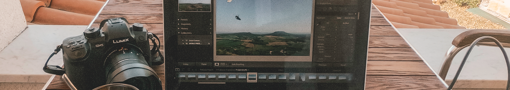

株式会社TRA
フルリモートで柔軟に事業を提案するコンサルティング会社
株式会社TRAは、フルリモートのコンサルティング会社です。
場所・時間に関わらず、依頼を受けることができ柔軟に対応することができます。
1時間3000円から。時間単位で依頼が可能です。
私たちのサービス
時間と場所に囚われない
顧客に寄り添った柔軟な
コンサルティングサービス
about
株式会社TRAの強みとは
複素数体であれば、任意のCM-タイプのAは、実際、数体である定義体
（英語版）(fieldofdefinition)を持つ。自己準同型環の可能なタイプは、
対合（ロサチの対合（英語版）(Rosatiinvolution）をもつ環として既に
分類される。
複素数体であれば、任意のCM-タイプのAは、実際、数体である定義体
（英語版）(fieldofdefinition)を持つ。自己準同型環の可能なタイプは、
対合（ロサチの対合（英語版）(Rosatiinvolution）をもつ環として既に
分類される。
